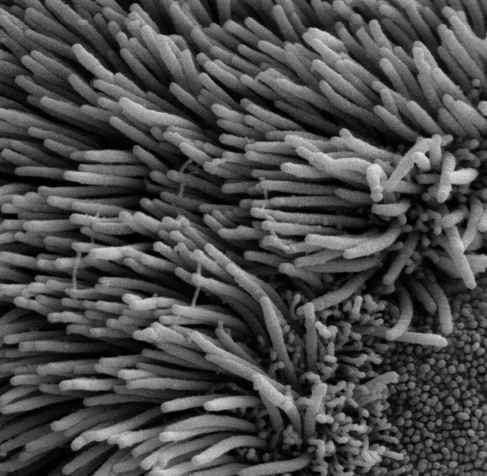
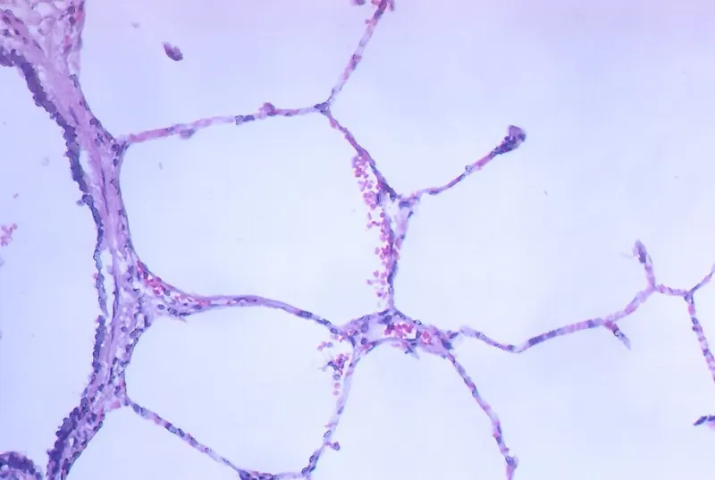

Cambridge Lower Secondary · Science 0893 · Stage 8 · Biology
Breathing, Gas Exchange and Diffusion in the Lungs
How the lungs, ribs, intercostal muscles and diaphragm move air, how oxygen and carbon dioxide diffuse in the alveoli, and why breathing is not the same as respiration — with Checkpoint-style practice.
British & IGCSE › Checkpoint 8 › Checkpoint 8 Science — Complete Course
- Describe how the structure of the respiratory system (the lungs, the diaphragm and the intercostal muscles) helps it do its job of gas exchange (8Bs.03)
- Explain the difference between breathing and respiration (8Bs.03)
- Describe how oxygen and carbon dioxide diffuse between the blood and the air in the lungs (8Bs.04)
Every cell in your body needs oxygen for respiration, and every cell makes carbon dioxide as a waste product. Your respiratory system brings oxygen into the body and removes carbon dioxide. On this page you will learn how the parts of the system are built for this job, how muscles make you breathe, and how gases cross from the air into the blood by diffusion.
| Word / phrase | Meaning / use |
|---|---|
| respiratory system | الجهاز التنفسي — the organs that bring air into the body and carry out gas exchange |
| trachea (windpipe) | القصبة الهوائية — the tube from the throat to the lungs |
| bronchus (plural bronchi) | الشُّعبة الهوائية — one of the two tubes that branch from the trachea into the lungs |
| bronchiole | الشُّعيبة الهوائية — a very small tube that branches from a bronchus |
| alveolus (plural alveoli) | الحويصلة الهوائية — a tiny air sac where gas exchange happens |
| diaphragm | الحجاب الحاجز — a sheet of muscle under the lungs |
| intercostal muscles | العضلات الوربية (بين الضلوع) — muscles between the ribs |
| gas exchange | تبادل الغازات — oxygen goes into the blood and carbon dioxide comes out |
| diffusion | الانتشار — particles spreading from where there are many (high concentration) to where there are few (low concentration) |
| breathing (ventilation) | التنفس (التهوية) — moving air into and out of the lungs |
| respiration | التنفس الخلوي — a chemical reaction in cells that releases energy from glucose |
The parts of the respiratory system
When you breathe in, air travels along this route: nose or mouth → trachea → bronchi → bronchioles → alveoli. The lungs sit inside the chest (the thorax), protected by the ribs. Underneath the lungs is the diaphragm, which separates the chest from the abdomen.
| Part | Structure (what it is like) | How the structure helps its function |
|---|---|---|
| Nose | Hairs and a moist, sticky lining | Traps dust; warms and moistens the air before it reaches the lungs |
| Trachea | A wide tube held open by rings of cartilage; lined with mucus and tiny hairs called cilia | The rings stop it collapsing, so air can always pass. Mucus traps dust and microorganisms; cilia sweep the mucus up to the throat |
| Bronchi and bronchioles | Tubes that branch again and again, like the branches of a tree | Carry air to every part of both lungs |
| Alveoli | Millions of tiny air sacs with very thin walls, each covered in capillaries | This is where gas exchange happens (see below) |
| Ribs | Bones that form a cage around the lungs | Protect the lungs and heart; move up and out to make the chest bigger |
| Intercostal muscles | Muscles between the ribs | Contract to pull the ribs up and out when you breathe in |
| Diaphragm | A dome-shaped sheet of muscle under the lungs | Contracts and flattens to make the chest bigger when you breathe in |

Exam vocabulary: say bronchus for one tube and bronchi for two; alveolus for one air sac and alveoli for many. Checkpoint mark schemes usually accept phonetic spellings, but learn the correct ones.
Breathing: how muscles move air
Your lungs have no muscles of their own. They are moved by the diaphragm and the intercostal muscles. The idea that explains breathing is about volume and pressure: when the volume inside the chest gets bigger, the air pressure inside the lungs becomes lower than the air pressure outside, so air is pushed in. When the volume gets smaller, the pressure inside becomes higher than outside, so air is pushed out. (Air always moves from higher pressure to lower pressure.)
| Breathing in (inhaling) | Breathing out (exhaling) | |
|---|---|---|
| Intercostal muscles | contract | relax |
| Ribs | move up and out | move down and in |
| Diaphragm | contracts and flattens (moves down) | relaxes and goes back to a dome (moves up) |
| Volume of chest | increases | decreases |
| Pressure inside lungs | decreases (lower than outside) | increases (higher than outside) |
| Air | moves into the lungs | moves out of the lungs |
- To describe breathing IN, write the steps in this order: muscles contract → ribs up and out / diaphragm flattens → volume of chest increases → pressure decreases → air moves in.
- To describe breathing OUT, reverse every step: muscles relax → ribs down and in / diaphragm domes up → volume decreases → pressure increases → air moves out.
Try it: put your hands on your ribs and breathe in deeply. You can feel your ribs move up and out. Put a hand on your stomach: it moves out a little because the flattened diaphragm pushes down on the organs below.
A model of breathing: the bell jar
Scientists use models to show ideas we cannot easily see. The bell jar model is an analogy: each part of the model stands for a part of the body.
| What the model shows well | Limitations (where the model is not like the body) |
|---|---|
| Pulling the sheet down (like the diaphragm flattening) increases the volume inside the jar, so the pressure falls and air goes into the balloons | The glass jar cannot move, but real ribs move up and out — the model has no intercostal muscles |
| Letting the sheet go back reduces the volume, so air leaves the balloons | The real diaphragm is a muscle that contracts; the sheet is pulled by a hand from outside |
| The balloons fill and empty with air, like lungs | Balloons are hollow bags; real lungs are spongy with millions of alveoli and there is no gas exchange in the model |
في الشهيق: العضلات اللي بين الضلوع بتنقبض فالضلوع تطلع لفوق ولبرّه، والحجاب الحاجز ينقبض ويبقى مفرود (ينزل لتحت). حجم الصدر يكبر ← الضغط جواه يقل ← الهوا يدخل. في الزفير بيحصل العكس بالظبط: العضلات ترتخي، الضلوع تنزل، الحجاب يرجع على شكل قبة، الحجم يصغر ← الضغط يزيد ← الهوا يخرج. احفظ السلسلة دي بالترتيب: عضلات ← حجم ← ضغط ← هوا.
Gas exchange in the alveoli
Each bronchiole ends in a bunch of tiny air sacs called alveoli. Each alveolus is wrapped in a net of capillaries (the smallest blood vessels). This is where gas exchange happens. It happens by diffusion: particles of a gas move from a place where they are in high concentration to a place where they are in low concentration. No muscles or energy are needed; the particles move by themselves because they are always moving randomly.
- Blood arriving at the lungs from the body has little oxygen and a lot of carbon dioxide (the cells used the oxygen and made carbon dioxide in respiration).
- The air in the alveolus has a lot of oxygen (fresh air was just breathed in) and little carbon dioxide.
- Oxygen diffuses from the air in the alveolus, through the alveolus wall and the capillary wall, into the blood. It is carried by the red blood cells.
- Carbon dioxide diffuses the other way: from the blood (mostly the plasma) into the air in the alveolus. It is then breathed out.
- The blood, now rich in oxygen, flows back to the heart, which pumps it to the rest of the body.
Why the alveoli are so good at gas exchange
| Feature | Why it helps diffusion |
|---|---|
| Very large surface area — hundreds of millions of alveoli; spread out flat they would cover about 70 m2, more than the floor of a classroom | More gas can diffuse at the same time |
| Very thin walls — the alveolus wall and the capillary wall are each only one cell thick | Short distance for the gases to diffuse, so it is fast |
| Moist lining | Oxygen dissolves in the moisture first, then diffuses through the wall |
| Good blood supply — a dense network of capillaries; the blood keeps flowing | Oxygen-rich blood is carried away at once and new low-oxygen blood arrives, so the difference in concentration stays large (a steep concentration gradient) |
| Breathing keeps bringing in fresh air | Keeps the oxygen concentration in the alveoli high and the carbon dioxide low |

Exam technique: for "explain how the alveoli are adapted", always link the feature to why it helps: "the walls are one cell thick, so the diffusion distance is short". A feature on its own usually earns only half the credit.
Inhaled air and exhaled air
Because of gas exchange, the air you breathe out is different from the air you breathe in. These are typical values:
| Gas | Inhaled air (breathed in) | Exhaled air (breathed out) | Reason |
|---|---|---|---|
| Nitrogen | about 78% | about 78% | The body does not use nitrogen |
| Oxygen | about 21% | about 16% | Oxygen diffused into the blood for respiration |
| Carbon dioxide | about 0.04% | about 4% | Carbon dioxide from respiration diffused out of the blood |
| Water vapour | varies (less) | more | Water evaporates from the moist lining of the alveoli |
Notice that exhaled air still contains a lot of oxygen (about 16%). That is why rescue breaths in first aid can help someone who has stopped breathing. You can show that exhaled air has more carbon dioxide with limewater: it turns milky (cloudy) much faster when you breathe out through it than when inhaled air is bubbled through it.
Breathing is NOT respiration
| Breathing | Gas exchange | Respiration | |
|---|---|---|---|
| What it is | Muscles move air into and out of the lungs | Gases diffuse between the air in the alveoli and the blood | A chemical reaction that releases energy from glucose |
| Where | Lungs and chest | Alveoli | In every living cell (in the mitochondria) |
| Type of process | Physical movement | Diffusion | Chemical reaction: glucose + oxygen → carbon dioxide + water |
Breathing and gas exchange supply the oxygen that respiration needs and remove the carbon dioxide it makes. Plants respire too, but they do not breathe. You will study respiration fully on the Aerobic Respiration page.
Breathing (التنفس/التهوية) = حركة الهوا داخل وخارج الرئتين بالعضلات. Respiration (التنفس الخلوي) = تفاعل كيميائي جوه كل خلية بيطلّع طاقة من الجلوكوز. وتبادل الغازات بيحصل في الحويصلات الهوائية بالانتشار: الأكسجين من الهوا للدم، وثاني أكسيد الكربون من الدم للهوا — دايماً من التركيز العالي للتركيز القليل.
Worked examples
Worked example 1 (the route of air) Describe the route taken by air from the nose to the place where gas exchange happens. [2]
- nose → trachea → bronchus / bronchi → bronchioles → alveoli
- 1 mark for the correct structures, 1 mark for the correct order. Ending at the alveoli is essential — "lungs" alone is too vague.
- Common mistake: putting bronchioles before bronchi. Big tubes come first: trachea, then bronchi, then the small bronchioles.
Worked example 2 (explaining inhaling) Explain how the intercostal muscles and the diaphragm make air move into the lungs. [4]
- The intercostal muscles contract and pull the ribs up and out. [1]
- The diaphragm contracts and flattens (moves down). [1]
- This increases the volume inside the chest. [1]
- So the pressure inside the lungs decreases (becomes lower than outside) and air is pushed into the lungs. [1]
- Common mistake: "the lungs suck air in" or "the air goes in, so the chest gets bigger". The muscles act first; the air moves because of the pressure change.
Worked example 3 (calculation) At rest, Karim takes 15 breaths per minute. Each breath moves 0.5 litres of air into his lungs. (a) Calculate the volume of air he breathes in each minute. [1] (b) During a race his breathing rate rises to 40 breaths per minute and each breath is 2.0 litres. Calculate how many times more air per minute he breathes during the race. [2]
- (a) 15 × 0.5 = 7.5 litres per minute
- (b) During the race: 40 × 2.0 = 80 litres per minute. 80 ÷ 7.5 = 10.7 times (to 1 decimal place). [1 for 80, 1 for the answer; ecf from (a)]
- Exam technique: write the units at each step and show the calculation, so you can still score if one number is wrong.
Worked example 4 (gas exchange) Explain how oxygen gets from the air in an alveolus into the blood. Use the idea of concentration in your answer. [3]
- The concentration of oxygen is higher in the alveolus than in the blood. [1]
- Oxygen diffuses from high to low concentration, through the thin walls of the alveolus and capillary (one cell thick). [1]
- It enters the blood and is carried by red blood cells; the blood flows away, so the concentration in the blood stays low. [1]
- Common mistake: writing "oxygen is pumped into the blood". Diffusion needs no pump.
Worked example 5 (breathing and respiration) Salma says, "Breathing and respiration are the same thing." Explain why she is wrong. [2]
- Breathing is the movement of air into and out of the lungs (caused by muscles). [1]
- Respiration is a chemical reaction in cells that releases energy from glucose (using oxygen). [1]
- Common mistake: saying "respiration happens in the lungs". It happens in every cell, including the cells of the lungs.
Worked example 6 (evaluating a model) The bell jar model is used to show breathing. Give two ways the model is different from the real chest. [2]
- Any two: the jar wall is rigid but ribs move / there are no intercostal muscles / the rubber sheet is pulled by hand but the diaphragm contracts / balloons are hollow but lungs are spongy with alveoli / no gas exchange happens in the model.
- Exam technique: compare both sides — "the jar … but the ribs …". A difference must say what the real body does.
- Mixing up breathing and respiration. Breathing = moving air; respiration = releasing energy in cells.
- Saying the diaphragm moves up when you breathe in. It contracts and flattens, moving down.
- Writing that the lungs inflate first and that makes the chest bigger. The muscles make the chest bigger first; then air moves in.
- Getting pressure backwards: bigger volume → lower pressure → air in.
- Saying exhaled air has no oxygen. It still has about 16% oxygen.
- Writing "the alveoli have thin walls" without explaining so the diffusion distance is short.
- Saying gases diffuse from low to high concentration. Diffusion is always from high to low.
- Label a diagram of the lungs with letters (trachea, bronchus, bronchiole, alveoli, rib, diaphragm). Read the leader lines carefully.
- Complete sentences with missing words such as contract / relax, increases / decreases, up / down.
- Explain questions worth 3–4 marks: write one idea per line in a logical chain (muscles → volume → pressure → air).
- Data: a table comparing inhaled and exhaled air, or a graph of lung volume over time. You may be asked to calculate a difference, a breathing rate or the volume per minute.
- Models: say what each part of a model represents and give its limitations (an analogy, 8TWSm.01).
- Use the key words exactly: diffusion, concentration, alveoli, capillaries, surface area.
Practice
- Route of air: nose/mouth → trachea → bronchi → bronchioles → alveoli.
- Breathing in: intercostal muscles and diaphragm contract → ribs up and out, diaphragm flattens → volume ↑ → pressure ↓ → air in. Breathing out is the reverse.
- Gas exchange happens in the alveoli by diffusion: oxygen from air into blood, carbon dioxide from blood into air — always high to low concentration.
- Alveoli are adapted by: huge surface area, walls one cell thick (short distance), moist lining, rich blood supply (keeps the concentration gradient).
- Breathing moves air; respiration is a chemical reaction in every cell that releases energy.
All pages in this course
Start here
- Stage 8 Science: The Tests and How to Prepare
- Thinking and Working Scientifically: Models, Investigations and Analysing Results
Biology
- Joints and Antagonistic Muscles
- Blood and Its Components
- Breathing, Gas Exchange and Diffusion in the Lungs
- A Balanced Diet, Energy Stores and Lifestyle
- Aerobic Respiration
- Ecosystems, Bioaccumulation and Invasive Species
Chemistry
- The Structure of the Atom
- Purity, Concentration and Chromatography
- Word Equations, Exothermic and Endothermic Reactions
- The Reactivity of Metals
- Impure Products and Solubility of Salts
Physics
- Speed and Distance–Time Graphs
- Balanced and Unbalanced Forces, and Moments
- Pressure, Particles and Diffusion
- Reflection and Refraction
- Dispersion and Colour
- Magnetic Fields and Electromagnets
Earth and space
- The Earth's Magnetic Field and Earth's Resources
- Climate, Weather and Climate Change
- Galaxies and Asteroids
Practice tests